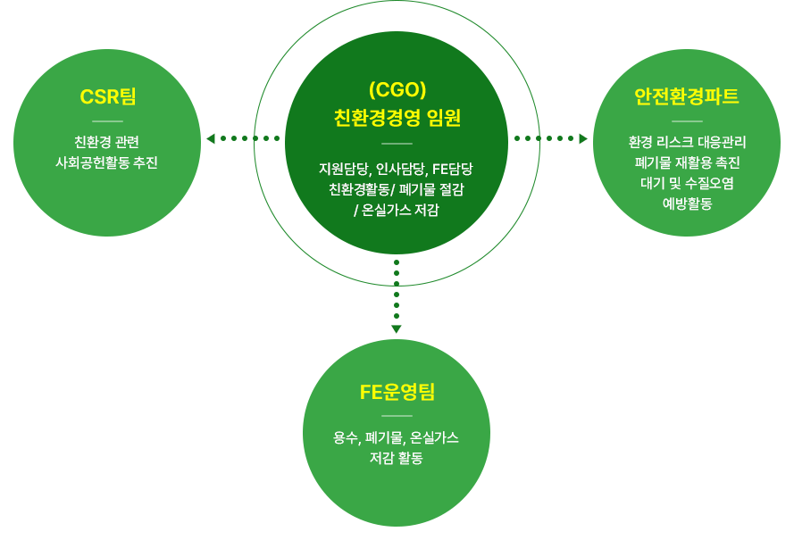

신세계푸드는 더 나은 미래환경을 만들기 위해
친환경 경영을 지속적으로 실천하고 있습니다.
친환경 방침
신세계푸드는 환경오염을 방지하고 더나은 지구환경을 위해 환경정책을 철저히 준수하고 모든 경영활동에서 환경적인 측면을 우선적으로 고려하는 기업이 되고자 다음 사항을 지속적으로 추진하고자 합니다.
친환경 목표
- ISO 14001 표준을 적용한 환경경영시스템 구축 및 환경영향 최소화 추진
- 친환경적 제품 개발 확대
- 폐기물 저감 및 환경법규 준수
- 온실가스 배출 저감(2030년까지 온실가스배출집약도 10% 저감)
세부 목표 및 추진계획
- 1. 지속가능한 제품 개발
- 1) 대안육 사업 활성화를 통한 탄소배출 저감에 기여
- 2) 저탄소제품 인증 노력을 통한 외부 공신력 확보
- 2. 친환경 패키징 확대
- 1) 탄소중립형 포장재, 대체플라스틱 적용
- 2) 재활용 용이/폐기물 감량 포장 확대
- 3. 폐기물 저감 및 환경법규 준수
- 1) 재활용 촉진을 통한 소각/매립 제로화(재활용 98%)
- 2) 엄격한 오염물질 처리(수질오염물질 법적기준치 50% 미만 등)
- 4. 친환경 캠페인
- 1) 임직원 참여형 환경캠페인 활성화
- 2) 환경단체 연계를 통한 지역사회 환경캠페인 지원
친환경경영 의사결정 조직

※CGO(chief green officer)
친환경 활동 실천


음성공장 태양열발전
음성공장 상부 유휴부지를 활용하여 신재생에너지를 생산하여
가스(LNG)를 대체하여 사용하고 있습니다.
친환경패키징 확대
식품제조 시 사용되는 용기를 탄소중립형 포장재,
대체 플라스틱 적용을 확대하고 있습니다.
대안육제품 개발
제품 제조 시 원료육 대신 식물성 원료를 사용하여 가축사육 시
발생되는 메탄가스 및 물과 사료의 사용량을 줄여 지속가능한
지구환경에 이바지 하고자 합니다.
(협력회사)친환경 경영 독려
2021년부터 (물류 등)협력회사 입찰평가 시 ESG경영 우수 실천
협력사 대상 가점 부여를 통해 ESG 영향력 전파에 앞장서고 있습니다.